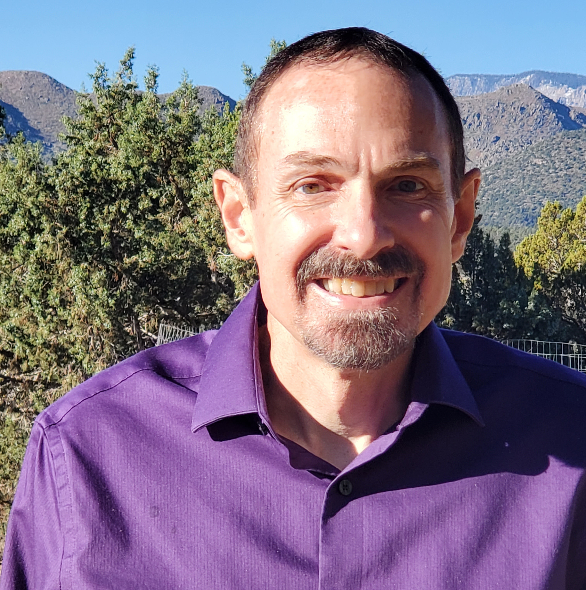

I am pleased to present to you my resume for your consideration. I would like to give you a brief description of myself. I first started my working career as a construction helper where I helped patch together modular homes during the summer months. This helped me to develop a strong work ethic, and to be able to take and implement work instructions.
Since that type of a job is seasonal, I was able to find another job for the winter months, this started me in my nearly 40 years in the manufacturing industry. I started as a delivery person and worked my way to operating machines, (starting with manual and going to CNC), into programming and eventually into process engineering. This is where I developed my love for solving problems in technical environments. I also continued to hone my time management as well as hard working skills.
I decided to change my career path and develop additional skills and one that would also help the environment. I joined the solar industry and have been working in various capacities for the last seven, (7) years. This has given me an opportunity to not only learn about the solar industry but also learn about data management and data analysis. This has developed into a new love for programming, desktop and web design.
I present to you my resume, I look forward to being able to be a part of your team!
May 2019 - Present
Learned solar components and installation of solar systems, particularly on the commercial side. Organized our companies’ data into an ERP system, (Striven). Implemented the switchover from Striven to Sunbase. Performs all preliminary commercial proposal designs and evaluations using Energy Tool Base, (ETB), and Aurora software tools.
Oct 2013 - May 2019
Programmed for both Star and Deco Swiss style screw machines, (programmed Deco 10, 15, and 20mm machines). I was responsible for implementing SolidWorks 3D CAD system as well as PartMaker CAM software. In programming we were required to produce a 3D solid model of the part, write the program and assist the set-up people in trouble-shooting the set-up. My responsibility included overseeing four (4) other programmers.
March 1982 - Sep 2013
I Started by learning how to run manual machining equipment, (mills, lathes and turret lathes). In 1987 I became the Forman of the manual department, overseeing five (5) machinists. In 1990 I was promoted to Head Schedular where I was responsible for scheduling all jobs for the entire company. I worked in that position for apx four (4) years and then was promoted to Production Manger over the entire machine shop.
In 1999 there was an opening in our Process Design department. Here we developed the process that would take the part from raw material to shipping the completed part(s) to the customer. In 2002 I was promoted to Process Design Manager, responsible for overseeing four (4) other process designers. We implemented the use of SolidWorks for producing our 3D models and an ERP system called Profit key. We also had to become proficient in Microsoft Excel as well as Word. I stayed in this position until I left the company in 2013.